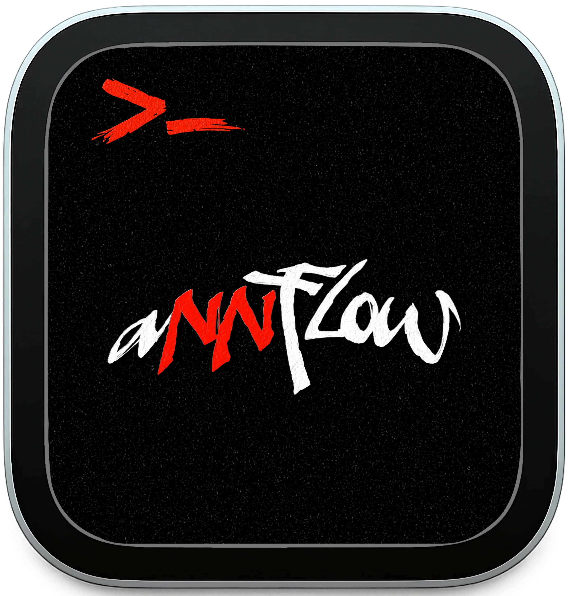

CRM и процессы
Лиды, статусы, SLA, права, справочники, регламенты и операционные таблицы на Google Workspace.
arsenynn
На базе AI, скриптов и интеграций
CRM-процессы, Telegram-боты, LLM-обработка текста, автогенерация документов, парсеры, API-интеграции и операционная аналитика.
Что делаю
Лиды, статусы, SLA, права, справочники, регламенты и операционные таблицы на Google Workspace.
LLM-обработка брифов, резюме кейсов, сопроводительные письма, структурирование неформального текста.
Telegram-боты, Webhooks, REST API, Google Apps Script, hh.ru API и связки между сервисами.
Автогенерация КП, договоров, счетов, актов, PDF и дашбордов для контроля результата.
Результаты автоматизации
Проекты
Карточки понятны без открытия. Нажми, чтобы увидеть полный кейс.
Архитектура систем
Входящая заявка нормализуется, попадает в рабочую таблицу и запускает SLA-уведомления.
Сырые сообщения превращаются в понятный бриф, summary или письмо с контролируемой структурой.
Парсинг, дедупликация, отбор релевантных сигналов и передача чистого лида в продажу.
Стек
Python, SQLite, JSON logs, requests, httpx, CLI scripts
OpenAI API, prompt engineering, structured summaries, text extraction
Telegram Bot API, Telethon, REST, Webhooks, hh.ru OAuth2, LeadHub
Sheets, Apps Script, Docs/PDF, Drive, Looker Studio
Услуги
Приём заявок, первичный бриф, уведомления, маршрутизация и сбор данных в таблицы/CRM.
Кастомные процессы без тяжёлого внедрения: лиды, клиенты, проекты, статусы, SLA и отчёты.
КП, договоры, счета и акты из шаблонов Google Docs/PDF за минуты вместо ручной сборки.
Извлечение фактов, генерация писем, структурирование брифов и подготовка summary для команды.
Telegram, сайты, API и чаты: фильтрация, дедупликация, статусная обработка и уведомления.
Связка разрозненных сервисов в один рабочий поток с логированием и контролем ошибок.
Для HR
Инженер по автоматизации и AI-интеграциям. Фокус: CRM-процессы, Telegram-боты, LLM-сценарии, Python-пайплайны, Google Workspace и внутренние инструменты.
Контакт
Быстрее всего отвечаю в Telegram. В канале публикую детали проектов, автоматизации, AI-интеграций и рабочие эксперименты.

Telegram-канал annsflow Подробные разборы проектов, автоматизации, AI-интеграций и рабочих экспериментов